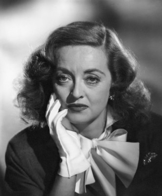
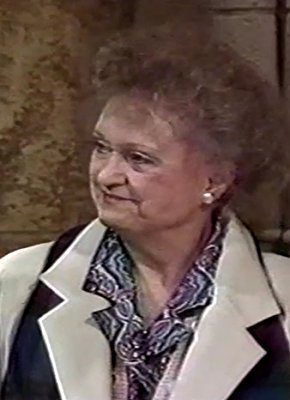

#2493 P.S. Ich Liebe Dich
Alternativ: P.S. I Love You

 IMDB-Wertung: 7.1 / 10
IMDB-Wertung: 7.1 / 10  Metascore: 39
Metascore: 39 
Es war die ganz große Liebe. Holly und Gerry wollten ihr Leben miteinander verbringen. Doch es kommt anders: Gerry stirbt und Holly, erst 29 Jahre alt, bleibt allein zurück. Auch ihr Leben scheint zu Ende. Sie kapselt sich ab, verlässt das Haus nicht mehr. Doch eines Tages bekommt sie einen Brief, mit Garrys Handschrift. Es ist der erste von einer Anzahl an Briefen, die Gerry vor seinem Tod verfasst hat. Und in jedem stellt er Holly eine Aufgabe, die sie innerhalb eines Monats zu lösen hat. So beginnt für Holly ein Jahr voller Abenteuer - jedes von Gerry detailliert geplant und unterschrieben mit den Worten: "P.S. Ich liebe dich"...
Jahr: 2007
Dauer: 126 Minuten
FSK: 0
Land: USA Studio: Warner Bros.Tonspuren: DTS - ,
Untertitel:
Auflösung: 1080p (1920x1040) Größe: 9441 MB
Genre: Drama, Liebe
Regisseur: Richard LaGravenese
Drehbuch: Richard LaGravenese, Steven Rogers, Cecelia Ahern
Soundtrack: John Powell
Darsteller:
 Hilary Swank als Holly
Hilary Swank als Holly Gerard Butler als Gerry
Gerard Butler als Gerry Lisa Kudrow als Denise
Lisa Kudrow als Denise Gina Gershon als Sharon
Gina Gershon als Sharon- James Marsters als John
 Kathy Bates als Patricia
Kathy Bates als Patricia Harry Connick Jr. als Daniel
Harry Connick Jr. als Daniel- Nellie McKay als Ciara
 Jeffrey Dean Morgan als William
Jeffrey Dean Morgan als William Dean Winters als Tom
Dean Winters als Tom- Anne Kent als Rose Kennedy
- Sherie Rene Scott als Barbara
 Susan Blackwell als Vicky
Susan Blackwell als Vicky Michael Countryman als Ted
Michael Countryman als Ted- Roger Rathburn als Minister
- Shepherd Frankel als Guy with Clipboard
 Mike Doyle als Leprechaun
Mike Doyle als Leprechaun- Caris Vujcec als Waitress
- Alexandra McGuinness als Local Gal
- Christopher Whalen als Man #2
- Marcus Collins als Gay Man #4
- Kevin Witt als Bar Patron #4
-  Bette Davis als Joyce Heath / Julie Marsden / Charlotte Vale , archive footage, uncredited
 Elli als Rabbi , uncredited
Elli als Rabbi , uncredited Judy Garland als Esther Blodgett , archive footage, uncredited
Judy Garland als Esther Blodgett , archive footage, uncredited-  Mark A. Langston als Dancer , uncredited
- Sal Longobardo als Male Dancer , uncredited
- Madalyn McKay als Maid of Honor , uncredited
- Brenna Palughi als Karaoke Girl , uncredited
- Brian McGrath als Martin Kennedy
- Rita Gardner als Elderly Woman
- Gayton Scott als Bridal Shop Tailor
- Brian Munn als Patsy
- Richard Wallace Smith als Bouncer
- Don Sparks als Mailman
- Aonghus Og McAnally als Bartender
- Ryan Everett Canfield als Man #1
- Timo Schnellinger als Man #3
- Danny Calvert als Gay Man #1
- Fred Inkley als Gay Man #2
- Richard B. Watson als Gay Man #3
- James Cronin als Gay Man #5
- Matthew Martin als Bar Patron #1
- Mark McNutt als Bar Patron #2
- Brocton Pierce als Bar Patron #3
- Dwayne Duprey als Bar Patron , uncredited
- Katherine Hoskins Mackey als Businesswoman , uncredited
- Brevard Hudson als Bar Patron , uncredited
- Sarah Kathryn Schmitt als Karaoke Bar Patron , uncredited
- Stewart Stafford als Bar Patron #5 , uncredited
Datei: X:\2007(N-Z)\P.S. Ich Liebe Dich (2007, FSK0, 1920x1040).mkv seit 13.11.2015
Festplatte: HD 2007(A-Z)-2008(A-F)
 Es gibt insgesamt 56 Filme in der Gruppe '2007(N-Z)'
Es gibt insgesamt 56 Filme in der Gruppe '2007(N-Z)'